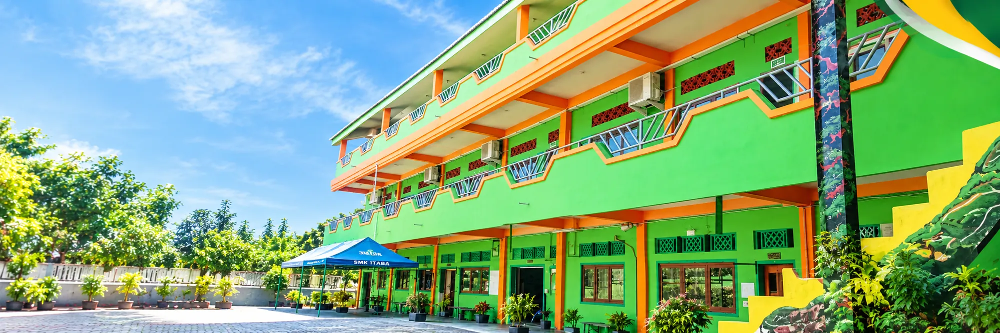

Sholat Dhuha Berjamaah
Membangun kedisiplinan spiritual dan menanamkan kebiasaan mendekatkan diri kepada Allah SWT sebelum memulai seluruh aktivitas belajar.

Pendidikan yang menyiapkan kehidupan
SMK Islam Tarbiyatul Badriyah (NPSN: 69852106) — Didukung gedung 3 lantai terakreditasi, fasilitas modern ber-AC, serta beragam ekskul dan komunitas belajar pengembangan bakat siswa.
01 — Tentang kami
SMK ITABA (Sekolah Menengah Kejuruan Islam Tarbiyatul Badriyah) memadukan pendidikan kejuruan, nilai-nilai keislaman, dan pembentukan karakter dalam lingkungan belajar yang dekat dengan kehidupan nyata.
Berdiri sejak 2010 di bawah naungan Yayasan Al Badriyah Al Mustofa, kami hadir dengan semangat untuk memberikan pendidikan yang tidak hanya berorientasi pada penguasaan ilmu pengetahuan dan keterampilan kejuruan, tetapi juga mengutamakan akhlak, kedisiplinan, dan etos kerja.
Sebagai lembaga pendidikan yang berakar pada nilai-nilai pondok pesantren, SMK ITABA mendampingi setiap peserta didik agar memiliki kompetensi kuat, berakhlak mulia, percaya diri, dan siap bersaing di dunia industri hingga tingkat internasional.
02 — Karakter & Nilai Pesantren
Setiap pagi sebelum kegiatan belajar mengajar dimulai pukul 08.10 WIB, peserta didik dibiasakan mengawali hari dengan ibadah dan pembinaan rohani.
Membangun kedisiplinan spiritual dan menanamkan kebiasaan mendekatkan diri kepada Allah SWT sebelum memulai seluruh aktivitas belajar.
Melestarikan tradisi keagamaan Ahlussunnah wal Jama'ah untuk memupuk kebersamaan, ketenangan jiwa, serta mendoakan kebaikan bagi sesama.
Tadarus Al-Qur'an dilanjutkan pembelajaran mata pelajaran umum serta praktik produktif kejuruan di bengkel dan lab komputer.
03 — Nilai Utama
Pendidikan kejuruan berjalan berdampingan dengan pembiasaan keagamaan dan pembentukan akhlak.
Belajar melalui teori mendalam dan praktik nyata sesuai standar kebutuhan industri kerja.
Disiplin, tanggung jawab, kepedulian sosial, dan pembinaan akhlak berlandaskan nilai keislaman.
Siap bekerja di industri, siap berwirausaha mandiri, serta mampu bersaing hingga kancah internasional.
04 — Sarana & Prasarana
Menunjang proses belajar teori dan praktik siswa dalam lingkungan yang nyaman, bersih, representatif, serta terakreditasi.
Gedung SMK ITABA yang terletak di kawasan pendidikan Desa Tebel Gedangan terdiri dari 3 lantai dan mempunyai ruang kelas untuk Teori dan Praktek siswa. Ruang yang nyaman dan lingkungan yang bersih akan membuat para siswa terhindar dari kejenuhan, serta telah TERAKREDITASI.
05 — Bakat & Minat Siswa
SMK ITABA menyediakan beragam wadah kegiatan ekstrakurikuler dan komunitas belajar untuk mengasah bakat, teknologi, kepemimpinan, dan potensi diri siswa.
Eksplorasi software, robotik & multimedia
Kesehatan fisik, sportivitas & seni silat
Membentuk karakter, wawasan & kepercayaan diri
Kepedulian sosial, lingkungan hidup & skill nyata
06 — Akar dan arah
SMK ITABA (Sekolah Menengah Kejuruan Islam Tarbiyatul Badriyah) didirikan pada tahun 2010 oleh KH. Badrul Munir, M.Pd.I. (Alm.) dan kepemimpinan yayasan kini dilanjutkan oleh putra beliau, yakni Gus Anwaruddin, di bawah naungan Yayasan Al Badriyah Al Mustofa.
Pendidikan kejuruan berjalan berdampingan dengan pembiasaan keagamaan dan pembentukan akhlak mulia. Melalui program keahlian Desain Komunikasi Visual (DKV) dan Teknik Kendaraan Ringan (TKR), sekolah terus mengembangkan kurikulum yang aplikatif, relevan dengan kebutuhan dunia usaha dan dunia industri (DUDI), serta membuka akses kemitraan internasional.
“Membangun Kompetensi, Membentuk Karakter, Menyiapkan Masa Depan.”